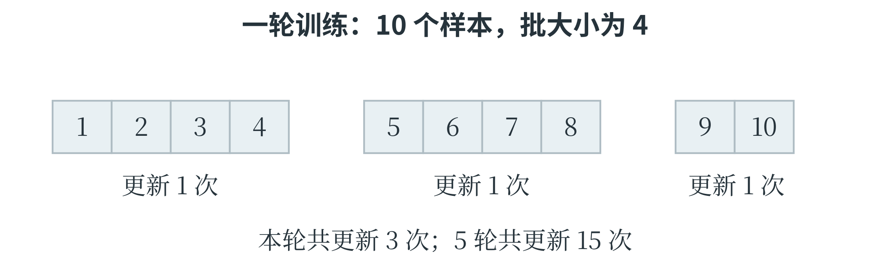
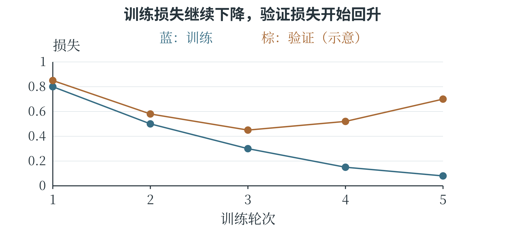
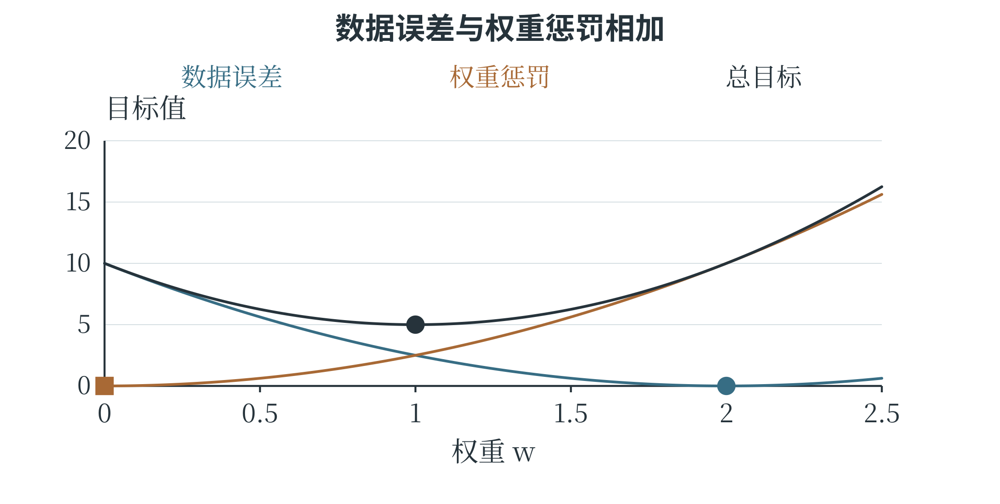

6.7 模型训练与改进
一次更新与一轮训练
训练时可以每次用全部训练样本计算损失和梯度，称为批量梯度下降；也可以每次只取一个样本，或一小批样本近似估计梯度。后一种常用方式称为小批量训练。一批含多少样本，称为批大小；完整处理一遍训练集，称为一个训练轮次，常用英文 epoch 表示。处理一批并更新一次参数，是一个更新步骤，两者不是同一个单位。例如，训练集有 1000 个样本，批大小为 100，不丢弃数据时，一轮共有 10 个批次，通常完成 10 次参数更新。小批量梯度会随所抽样本波动，损失不一定每一步都下降，但计算资源利用和更新频率常更适合大数据训练。打乱独立训练样本的顺序，有助于避免批次长期偏向某一类；时间序列等有专门结构的任务，则需要相应采样方式。
训练一般反复经历取样、前向计算、计算损失、反向传播和更新参数。分类网络常使用交叉熵损失。在二分类中，标签 \(y\) 为 0 或 1，模型对正类的概率估计为 \(p\)，损失为 \(-[y\ln p+(1-y)\ln(1-p)]\)。若真实标签为 1，这个式子只留下 \(-\ln p\)：给真实类别较低概率，损失就更大。公式要求对数输入为正，实际软件还会用数值稳定的实现处理非常接近端点的情形。
训练为什么常用交叉熵，而不直接用准确率？准确率只记录类别是否判对，很多参数的小变化并不改变它；交叉熵还能区分“刚刚判对”与“对真实类别给出较高概率”的预测，有利于提供连续的训练信号。训练损失与最终应用指标可以不同，但应当相互匹配，并通过验证结果检查这种选择是否合适。
训练轮次、更新次数和输出置信程度
训练集若只有 10 个样本，批大小为 4，且不丢弃最后不足一批的数据，那么一轮分为 4、4、2 三批，共有三次更新。训练五轮则通常有 15 次更新。每一轮可以让所有样本都参与一次，每一批得到的梯度却只反映当前这一部分材料。最后一批样本少，计算平均损失时也应按这一批实际的数量处理。

分类训练还需要比“判对了没有”更细的信号。假设真实标签为 1，两次预测给正类的概率分别为 0.6 和 0.9，按 0.5 阈值都判对，准确率没有区别；交叉熵却分别为 \(-\ln0.6\approx0.5108\) 和 \(-\ln0.9\approx0.1054\)，后一种损失更小。若模型给真实类别的概率仅为 0.01，损失约为 4.6052，说明这个错误判断会受到更大的惩罚。对于真实标签 0，应看模型给负类的概率 \(1-p\)。如果 p 为 0.9，负类概率仅为 0.1，损失便是 \(-\ln0.1\approx2.3026\)。同一个 p，在不同真实标签下对应的损失不同，因为损失比较的是预测与目标。
从连续记录看训练是否继续有用
只看最后一轮的损失，难以知道训练过程中发生了什么。可以在每轮结束时，用同一评价规则分别计算训练和验证损失，保存成两条序列。表 6-4 是用于分析的示意记录，图 6-15 将同一组数画成曲线。
表 6-4 五轮训练中的损失变化示例
| 轮次 | 训练损失 | 验证损失 |
|---|---|---|
| 1 | 0.80 | 0.85 |
| 2 | 0.50 | 0.58 |
| 3 | 0.30 | 0.45 |
| 4 | 0.15 | 0.52 |
| 5 | 0.08 | 0.70 |

前三轮，两条损失都在下降，说明训练资料和验证资料上的表现一起改善；后两轮训练损失继续下降，验证损失却上升。在数据划分合理、评价方式一致的前提下，这提示模型可能开始过分贴合训练细节。若预先规定容许连续两轮没有改善，训练到第五轮可以停止，并使用第三轮保存的参数。
停止的时刻和最终采用哪轮参数，需要分别记录。曲线提供了进一步检查的线索。可以先检查验证集是否代表实际使用条件，再尝试降低不必要的模型复杂度、增加合适的训练材料或使用正则化。每次改动后重新观察曲线和实际错误，才能知道改动是否解决了原来的问题。
欠拟合与过拟合
欠拟合表示模型没有充分学到任务中可用的规律，在训练数据上也表现不佳。例如，用一条直线去描述明显弯曲的关系，即使训练充分，也可能持续留下较大误差。模型表达能力不足、特征遗漏、训练轮次不够或优化设置不合适，都可能造成类似现象，需要结合具体证据区分。过拟合表示模型过度适应训练材料中的细节或噪声，训练表现很好，新数据表现却较差。树不断分支直到记住每一条训练记录，高次多项式追随每一个测量波动，都是直观例子。训练损失持续降低而验证损失开始升高，是值得注意的信号。
训练与验证之间有差距，也可能有其他原因。数据分布不同、标注质量不同也可能造成差距。
若训练和验证误差都很高，可以先检查代码、特征与训练过程，再考虑提高模型能力或增加有效训练；若训练误差很低而验证误差较高，可以检查数据泄漏与划分、补充有代表性的样本，或者降低不必要的复杂度。常见做法包括减小树深、减少多项式次数、调整网络规模、使用适当增强等。应当根据发现的问题改动，而不是在每种情况下都笼统地“加数据、加层数”。
正则化、早停与超参数选择
正则化是在拟合训练数据之外，对模型施加额外约束或偏好，以改善泛化。例如，在平方误差后增加权重平方和的惩罚：
\(\lambda\) 是非负的正则化强度。惩罚项使非常大的权重需要付出额外代价，训练便在贴近数据与控制权重之间取舍。强度过大也可能让模型过于受限，出现欠拟合。是否惩罚偏置、怎样按样本数缩放惩罚项，属于具体实现约定；读代码时应查清所用工具的定义。
早停在验证表现长期不再改善时结束训练，并保留表现较好的参数。它并不是看到某一批训练损失上升就立刻终止，因为小批量波动很常见。可以预先规定容许多少轮没有改善、用哪个指标比较。验证材料的使用方式也要明确，不能一边用测试集决定停止时间，一边再把同一测试集当作独立考试。
超参数搜索可以比较一组候选设置。例如，对决策树最大深度依次尝试 2、4、6，每次仅用训练集学习，再用验证集比较。更完整的方法可以同时比较几个超参数，或采用交叉验证。比较时尽量保持评价材料和其他重要条件一致，记录每个设置的结果，便于判断改进来自哪里。
正则化怎样改变最优参数
对两条训练样本 \((1,2)\)、\((2,4)\)，先考虑没有偏置的模型 \(\hat y=wx\)。它的均方误差为
只看数据误差，\(w=2\) 可以让两条预测都正确，损失为零。现在加入强度为 2.5 的权重平方惩罚，总目标改为
对总目标求导，得到 \(5(w-2)+5w=10w-10\)，在 \(w=1\) 处为零。这个二次函数开口向上，所以它在 1 处取得最小值。表 6-5 比较几个候选，能够看出正则化改变了什么。
表 6-5 数据误差与权重惩罚共同决定总目标
| w | 数据误差 | 惩罚项 | 总目标 |
|---|---|---|---|
| 0 | 10 | 0 | 10 |
| 1 | 2.5 | 2.5 | 5 |
| 2 | 0 | 10 | 10 |
新的参数使预测变为 1、2，数据误差由零增加到 2.5，但权重惩罚由 10 降到 2.5，总目标反而更小。训练正是在按照改变后的目标作取舍。图 6-16 分别画出两项与它们的和，三条曲线最低的位置并不相同。

这组没有噪声的小数据，本来就能被 \(w=2\) 完全描述，较强正则化反而损害了这个真实关系的拟合。可见，加入惩罚并不保证预测更准。实际任务中，额外约束可能减少模型追随噪声，也可能限制了本来需要的变化，仍要在验证数据上选择强度。
如果把强度改记为一般的 \(\lambda\)，求导后可得最优权重为 \(10/(5+2\lambda)\)。\(\lambda=0\) 时回到 2；随着非负的 \(\lambda\) 增大，权重逐渐靠近零。参数的变化于是有了明确的方向和数量关系，而不只是“模型变简单”这样抽象的描述。
分别观察表达能力与训练结果
模型能表示什么，与训练最后找到了什么，是两个相关但不同的问题。一条直线能够通过某两点，不代表某次只更新一两步的训练已经找到了那条直线；一个神经网络能够表示异或关系，也不代表任意初始参数和任意学习率都会把它训练好。判断问题时，可以先检查表达形式，再检查训练过程。例如，真实关系明显弯曲，线性模型的训练与验证误差都较大，增加训练轮次可能只是让直线更接近它所能达到的最佳位置，仍无法变成曲线。相反，如果数据本来接近直线，但学习率过小、只训练了几步，那么换一个更复杂模型未必必要，先观察损失是否仍在稳定下降更有帮助。
数据量也会影响这种判断。很小的训练集上，复杂模型容易把几条记录全部拟合好，却很难凭这些记录确定哪些变化是稳定规律。增加覆盖实际条件的样本，可以让训练更充分地约束模型。若新增样本只是原来记录的重复副本，它们可能改变重复计算的次数，却没有带来相同程度的新信息。
可以把每次实验记录为“数据版本、模型设置、训练过程、验证结果”四部分。改变某一项后，观察相应曲线和错误类型，才知道改动产生了什么影响。这样的记录既用于选择当前模型，也帮助解释失败：究竟是模型形式不合适、训练未完成，还是现有数据无法支持所需判断。